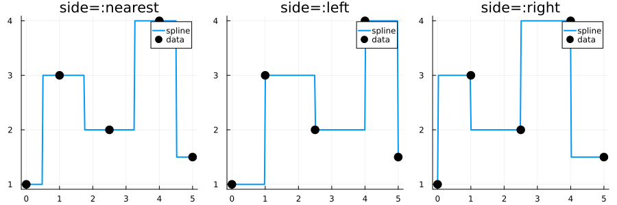

Constant Interpolation
Constant (step/piecewise constant) interpolation returns values from neighboring data points without blending. FastInterpolations.jl provides three modes controlled by the side keyword.
Basic Usage
using FastInterpolations
using Plots
# Sample data
x = [0.0, 1.0, 2.5, 4.0, 5.0]
y = [1.0, 3.0, 2.0, 4.0, 1.5]
# Interpolate at a single point
result = constant_interp(x, y, 1.7)
println("constant_interp(x, y, 1.7) = ", result)constant_interp(x, y, 1.7) = 3.0# Interpolate at multiple points
xq = [0.5, 1.5, 2.5, 3.5]
results = constant_interp(x, y, xq)
println("Results: ", results)Results: [1.0, 3.0, 2.0, 4.0]Side Modes
The side keyword controls which value is returned when a query point falls between data points:
| Mode | Behavior |
|---|---|
:nearest | Nearest neighbor (left on ties) — default |
:left | Always use left neighbor |
:right | Always use right neighbor |
xq = range(x[1], x[end], 200)
p = plot(layout=(1,3), size=(900, 300), legend=:topright)
for (i, side) in enumerate([:nearest, :left, :right])
yq = constant_interp(x, y, xq; side=side)
plot!(p[i], xq, yq, label="spline", linewidth=2)
scatter!(p[i], x, y, label="data", markersize=7, color=:black)
title!(p[i], "side=:$side")
end
p
At exact grid points (xi == x[i]), all modes return y[i] regardless of the side setting.
In-Place Interpolation
For maximum performance in loops:
out = zeros(4)
constant_interp!(out, x, y, xq[1:4])
println("In-place results: ", out)In-place results: [1.0, 1.0, 1.0, 1.0]Reusable Interpolant
When both x and y are fixed:
# Create interpolant once
itp = constant_interp(x, y; side=:left)
# Evaluate multiple times (zero-allocation)
result1 = itp(1.0)
result2 = itp(2.0)
println("itp(1.0) = ", result1)
println("itp(2.0) = ", result2)itp(1.0) = 3.0
itp(2.0) = 3.0Derivatives
Constant functions have zero derivative everywhere:
# deriv=1 and deriv=2 always return 0
slope = constant_interp(x, y, 1.5; deriv=1)
curvature = constant_interp(x, y, 1.5; deriv=2)
println("First derivative: ", slope)
println("Second derivative: ", curvature)First derivative: 0.0
Second derivative: 0.0When to Use Constant Interpolation
Choose constant interpolation when:
- Data represents discrete states or categories
- Sharp transitions must be preserved
- Monotonicity preservation is critical
- Lookup table behavior is desired
Consider linear or cubic when:
- Smooth transitions between values are needed
- Data represents continuous physical quantities
See Also
- Linear: Smooth linear blending between points
- Extrapolation: Control behavior outside the data domain